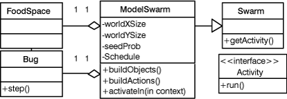

simpleSwarmBug
simpleSwarmBug
|
||||||||||
| 前のクラス 次のクラス | フレームあり フレームなし | |||||||||
| 概要: 入れ子 | フィールド | コンストラクタ | メソッド | 詳細: フィールド | コンストラクタ | メソッド | |||||||||
java.lang.Object
Swarmによる管理
Swarmと呼ぶ特殊なオブジェクトにBugとFoodSpaceを管理させる。
SwarmはBugとFoodSpaceからなる世界のモデルである。
これによって、モデルの詳細はメソッドmainから取り除かれる。
mainの役割は、このモデルを作ることだけになる。
SwarmはBugやFoodSpaceなどを持つだけでなく、activityによって、それらの動作も制御する。
Activityはオブジェクトに送られるメッセージの一覧である。
詳細はModelSwarm.javaを見てほしい。
ここでは単純にModelSwarmを生成し、ModelSwarmにオブジェクトとactivityを生成させる。
トップレベルのactivity（ここではModelSwarmのactivity）をrunすることで、シミュレーションを実行させる。
クラス図

処理の流れ

| コンストラクタの概要 | |
simpleSwarmBug()
|
|
| メソッドの概要 | |
static void |
main(java.lang.String[] args)
|
| クラス java.lang.Object から継承したメソッド |
clone, equals, finalize, getClass, hashCode, notify, notifyAll, toString, wait, wait, wait |
| コンストラクタの詳細 |
public simpleSwarmBug()
| メソッドの詳細 |
public static void main(java.lang.String[] args)
|
||||||||||
| 前のクラス 次のクラス | フレームあり フレームなし | |||||||||
| 概要: 入れ子 | フィールド | コンストラクタ | メソッド | 詳細: フィールド | コンストラクタ | メソッド | |||||||||